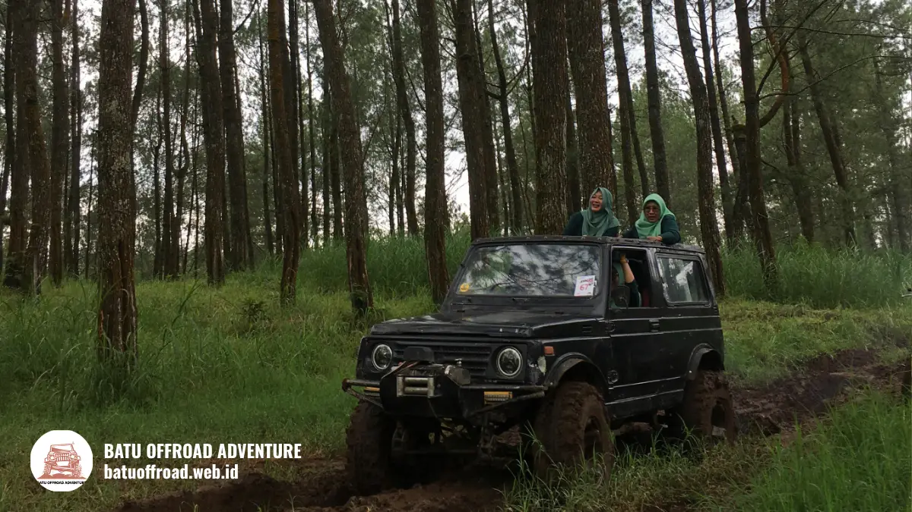

Jeep Offroad Batu Kenali Jenis Armada dan Pemandunya
Jeep offroad Batu umumnya berupa jeep wisata terbuka atau tertutup yang dikemudikan pemandu lokal untuk menyusuri jalur tanah di sekitar Coban Talun, Kota Batu. Jenis kendaraan, kapasitas, dan fasilitasnya berbeda antaroperator, sehingga setiap detail perlu dikonfirmasi saat pemesanan.
Poin Penting Panduan Armada
- Jeep offroad Batu adalah kendaraan wisata berpenggerak khusus medan berat yang dikemudikan pemandu berpengalaman.
- Armada umumnya terbagi menjadi jeep terbuka dan jeep tertutup, dengan karakter kenyamanan berbeda.
- Pengecekan kendaraan dan kemampuan pemandu menentukan keselamatan perjalanan.
- Kapasitas jeep berbeda tiap operator, jadi jumlah penumpang wajib dikonfirmasi.
- Pilih jeep berdasarkan jumlah peserta, usia, cuaca, dan tingkat kenyamanan yang diinginkan.
Apa Itu Jeep Offroad Batu?
Jeep offroad Batu adalah layanan wisata menggunakan jeep penjelajah medan berat, lengkap dengan pemandu, untuk menyusuri jalur tanah dan tanjakan di kawasan pegunungan Kota Batu.
Kota Batu berada di dataran tinggi Jawa Timur dengan lanskap pegunungan, kebun, dan air terjun. Kawasan sekitar Coban Talun sering dipakai sebagai area wisata jeep karena medannya berkontur dan pemandangannya terbuka. Jeep dipilih karena kendaraan ini dirancang untuk melewati jalan tidak rata, tanjakan, dan permukaan licin.
Permintaan wisata di kota ini tinggi. Pemkot Batu mencatat 778.235 wisatawan selama libur Lebaran 2025, naik dari 564.622 pada periode yang sama tahun 2024 (ANTARA, April 2025). Untuk keseluruhan 2024, paparan kinerja Pemkot Batu menyebut kunjungan wisata sebesar 10.737.865 wisatawan domestik dan mancanegara. Dengan angka setinggi itu, ketersediaan jeep pada akhir pekan dan musim liburan dapat cepat terisi.
Siapa yang cocok memakai jeep offroad di Batu?
Jeep offroad Batu cocok untuk keluarga, pasangan, teman sebaya, dan rombongan kantor yang ingin petualangan ringan dengan pendamping berpengalaman.
Peserta yang punya kondisi kesehatan tertentu, seperti masalah punggung, leher, atau kehamilan, sebaiknya berkonsultasi dengan dokter terlebih dahulu. Informasi dalam artikel ini bersifat umum dan bukan saran medis. Batas usia anak berbeda antaroperator, sehingga perlu ditanyakan sebelum memesan.
Jeep Apa Saja yang Dipakai untuk Offroad di Batu?
Jeep yang dipakai untuk offroad di Batu umumnya jeep wisata klasik atau modifikasi dalam konfigurasi terbuka maupun tertutup, tergantung pilihan armada tiap operator. Armada jeep wisata di Kota Batu dapat meliputi jeep klasik berpenampilan retro dan jeep modifikasi berpenggerak empat roda.
Merek dan tipe yang tersedia dapat berbeda antaroperator. Karena itu, jangan mengandalkan nama merek saja. Tanyakan kondisi kendaraan, tahun penggunaan, dan jenis kabin. Perbedaan yang paling terasa bagi wisatawan adalah kabin:
- Jeep terbuka. Bagian atas terbuka atau berkanopi ringan. Pemandangan luas, angin terasa langsung, dan debu lebih mudah masuk.
- Jeep tertutup. Kabin berkap atau beratap penuh. Perlindungan dari hujan dan debu lebih baik, tetapi pandangan dapat lebih terbatas.
Tiap pilihan punya batasan. Jeep terbuka kurang nyaman saat hujan deras. Jeep tertutup bisa terasa lebih pengap pada siang hari. Pilih sesuai karakter rombongan dan kondisi cuaca.
Mana yang lebih nyaman, jeep terbuka atau tertutup?
Kenyamanan jeep terbuka atau tertutup bergantung pada cuaca dan preferensi: jeep terbuka unggul untuk pemandangan, sedangkan jeep tertutup unggul untuk perlindungan dari hujan dan debu. Wisatawan yang ingin berfoto dan menikmati udara pegunungan biasanya memilih jeep terbuka. Rombongan dengan anak kecil atau lansia sering lebih nyaman di jeep tertutup. Tidak ada pilihan yang benar untuk semua orang. Untuk analisis lebih mendalam, pelajari artikel Perbedaan Jeep Terbuka dan Tertutup untuk Offroad di Batu.

Jeep hitam menyusuri hutan pinus dengan penumpang berhijab menikmati udara sejuk Kota Batu.
Bagaimana Kenyamanan dan Keselamatan Armada Jeep Offroad?
Kenyamanan dan keselamatan armada jeep offroad ditentukan oleh kondisi mesin, rem, ban, tempat duduk, pegangan, dan perawatan rutin yang dilakukan operator.
Armada yang terawat membuat perjalanan lebih aman. Operator yang baik biasanya memeriksa kendaraan sebelum beroperasi, terutama bagian yang bekerja keras di medan berat. Bagian yang umum diperiksa meliputi:
- Rem dan sistem kemudi.
- Ban dan kondisi suspensi.
- Mesin, oli, dan cairan pendingin.
- Tempat duduk, pegangan, dan sabuk pengaman bila tersedia.
- Lampu dan klakson.
Wisatawan juga bisa menilai kenyamanan dari hal sederhana. Perhatikan apakah tempat duduk kokoh, apakah ada pegangan yang mudah dijangkau, dan apakah kendaraan tampak terawat. Tanyakan langsung kepada operator tentang prosedur pengecekan sebelum berangkat.
Keselamatan tetap bergantung pada dua pihak. Operator bertanggung jawab pada kendaraan dan pengemudi, sedangkan peserta bertanggung jawab mengikuti arahan. Peserta sebaiknya tidak berdiri saat jeep melaju dan menjaga barang bawaan tetap aman.
Apa Peran Pemandu dalam Jeep Offroad Batu?
Pemandu jeep offroad Batu bertugas mengemudikan kendaraan, menentukan jalur aman, menjelaskan kawasan yang dilewati, dan membantu wisatawan selama perjalanan. Pemandu atau driver guide umumnya warga lokal yang mengenal medan. Pengalaman ini penting karena kondisi jalur berubah menurut musim dan cuaca. Pemandu tahu kapan harus memperlambat, memilih lintasan, atau berhenti di titik yang aman.
Selain mengemudi, pemandu sering membantu hal berikut:
- Memberi briefing keselamatan sebelum berangkat.
- Menjelaskan titik singgah dan kondisi jalur.
- Membantu mengambil foto bila diperlukan.
- Mengatur waktu agar jadwal rombongan tetap terjaga.
Peran pemandu bukan sekadar pengemudi. Pemandu yang komunikatif membuat peserta merasa lebih tenang, terutama bagi pemula. Wisatawan sebaiknya mematuhi arahan pemandu, sebab keputusan di lapangan biasanya didasarkan pada pengalaman dan kondisi jalur saat itu.
Apa yang perlu ditanyakan tentang pemandu?
Hal yang perlu ditanyakan tentang pemandu jeep offroad Batu adalah pengalaman mengemudi di jalur setempat, kemampuan memberi briefing, dan kesiapan membantu saat ada kendala. Pertanyaan sederhana seperti "sudah berapa lama menjadi pemandu di jalur ini" membantu Anda menilai kepercayaan. Jawaban jujur dan terbuka umumnya menandakan operator yang profesional.
Bagaimana Cara Memilih Jeep Offroad Batu untuk Rombongan?
Cara memilih jeep offroad Batu untuk rombongan adalah mencocokkan jumlah peserta, usia, cuaca, dan tingkat kenyamanan dengan kapasitas serta tipe kabin jeep yang tersedia. Gunakan parameter berikut saat menilai pilihan:
- Jumlah peserta. Hitung total orang, lalu tanyakan kapasitas tiap jeep. Jangan memaksakan penumpang melebihi kapasitas.
- Komposisi peserta. Rombongan dengan anak atau lansia perlu perhatian pada kenyamanan duduk dan perlindungan cuaca.
- Tipe kabin. Pilih terbuka untuk pemandangan atau tertutup untuk perlindungan.
- Kondisi armada. Minta penjelasan tentang pengecekan kendaraan.
- Pengalaman pemandu. Pastikan pemandu mengenal jalur dan siap memberi briefing.
Kapasitas jeep wisata berbeda antaroperator dan antartipe kendaraan. Karena itu, angka pasti harus dikonfirmasi langsung. Rombongan besar biasanya dibagi ke beberapa jeep. Pembagian yang baik mempertimbangkan keakraban peserta, usia, dan kenyamanan duduk, bukan hanya jumlah kursi.
Untuk informasi detail mengenai lintasan dan perlengkapan, simak panduan Rute dan Titik Wisata Fun Offroad Coban Talun serta Checklist Persiapan Fun Offroad Coban Talun Biar Aman. Booking jauh hari sangat disarankan untuk akhir pekan dan libur panjang.
Apa Kesalahan Umum Saat Memilih Jeep Offroad di Batu?
Kesalahan umum saat memilih jeep offroad di Batu adalah hanya melihat harga, tidak menanyakan kapasitas, dan mengabaikan kondisi armada serta pengalaman pemandu. Kesalahan lain yang sering terjadi:
- Memilih jeep terbuka padahal cuaca sedang tidak menentu.
- Memaksakan jumlah penumpang melebihi kapasitas yang aman.
- Tidak bertanya tentang pengecekan kendaraan.
- Tidak mengonfirmasi biaya tambahan.
- Datang terlambat sehingga jadwal bergeser.
Menghindari kesalahan ini cukup dengan bertanya sebelum membayar dan meminta rincian secara tertulis.
Kesimpulan
Jeep offroad Batu adalah wisata petualangan ringan yang bergantung pada kualitas armada dan pengalaman pemandu. Pilih jeep berdasarkan jumlah peserta, cuaca, dan kenyamanan, lalu pastikan kendaraan melalui pengecekan sebelum berangkat.
Ringkasan Utama (Takeaways)
- Tanyakan jenis jeep, kapasitas, dan tipe kabin.
- Minta penjelasan prosedur pengecekan kendaraan.
- Patuhi arahan pemandu selama perjalanan.
- Booking jauh hari untuk akhir pekan dan musim liburan.
Hubungi operator sekarang untuk menanyakan armada dan ketersediaan jeep pada tanggal Anda.
FAQ
-
Jeep apa saja yang dipakai untuk offroad di Batu?
Jeep offroad Batu umumnya berupa jeep wisata terbuka atau tertutup, baik klasik maupun modifikasi. Tipe dan merek berbeda antaroperator, sehingga konfirmasikan jenis kendaraan saat pemesanan. -
Apa beda jeep terbuka dan tertutup?
Jeep terbuka menawarkan pemandangan luas dan angin langsung, tetapi lebih terpapar debu dan hujan. Jeep tertutup memberi perlindungan lebih baik dari cuaca, dengan pandangan yang lebih terbatas. -
Berapa orang dalam satu jeep?
Jumlah penumpang per jeep berbeda menurut tipe kendaraan dan kebijakan operator. Tanyakan kapasitas maksimal secara langsung agar rombongan tidak melebihi batas yang aman.
Artikel Terkait